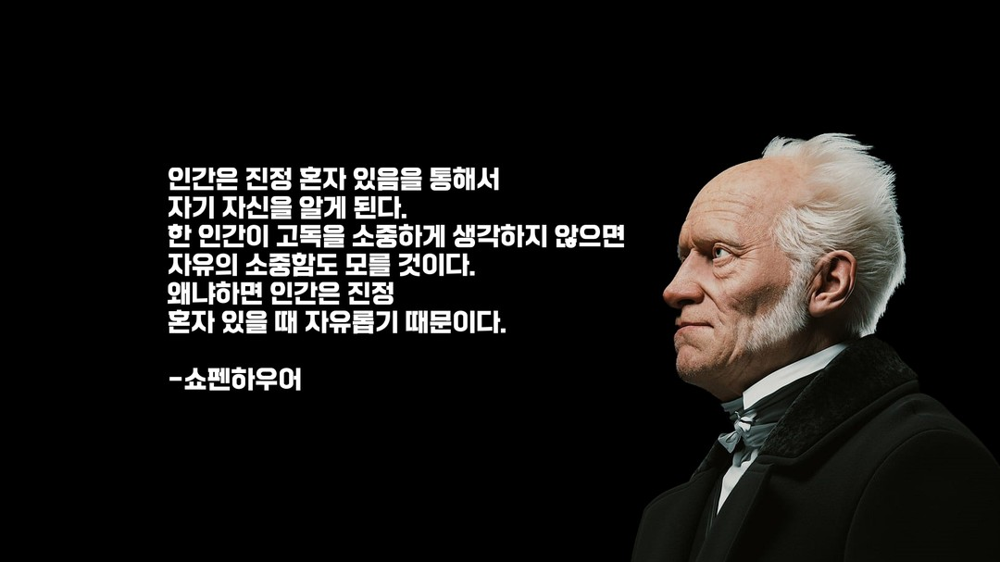

「마흔에 읽는 쇼펜하우어」 독후감
"고통이란 삶의 본질적 요소이다."

책을 펼친 순간, 나는 마치 부드러운 스탠드 조명 아래, 고요한 나무 책상에 앉아 있는 듯한 기분이 들었다. 창밖으로는 희미한 달빛이 스며들었고, 방 안은 적막과 따스함이 뒤섞여 있었다. 그 속에서 나는 쇼펜하우어와 조용히 대화를 나누기 시작했다. "마흔에 읽는 쇼펜하우어"는 단순히 철학자의 사상을 해설하는 책이 아니었다. 그것은 불안정한 사회 초년생인 내가 앞으로 마주할 인생을 조심스럽게 비추어주는 거울 같았다.저자는 쇼펜하우어의 복잡하고 난해한 문장을 오늘날의 언어로 풀어주었다. 덕분에 나는 쇼펜하우어의 삶과 철학을 더 친근하게 느낄 수 있었다. 쇼펜하우어는 평생 외로움 속에서 살았다. 그는 다른 철학자들과도, 심지어 가족과도 불화하며 고독을 택했다. 그의 인생은 외로움과 싸우는 대신 그것을 수용하고, 고통 속에서 삶의 본질을 탐구하는 여정이었다. 그는 끊임없이 고독을 강조했고, 행복이란 외부의 인정이나 부를 통해 얻어지는 것이 아니라 스스로의 내면에서 자라야 한다고 말했다. 사회 초년생으로서 나도 모르게 타인의 시선과 성취에 매달렸던 내 모습을 돌아보게 했다.
책을 읽으며 가장 인상 깊었던 것들
책장을 넘길수록 나는 점점 더 쇼펜하우어의 시선으로 세상을 보게 되었다. 그는 인간 존재의 근본을 고통이라 정의했다. 삶은 끊임없는 욕망과 결핍의 반복이며, 고통은 삶의 본질이라는 그의 선언은 어쩌면 차가웠지만, 동시에 나를 위로했다. 사회에 나와 막막한 현실을 마주할 때마다 느꼈던 좌절이 결코 나만의 문제가 아니라는 사실이 위안처럼 다가왔다. 쇼펜하우어는 인생이란 결국 끊임없는 욕망 충족을 향한 무한한 경주이며, 참된 평화는 욕망을 다스릴 때 비로소 얻을 수 있다고 역설했다.
쇼펜하우어의 철학을 만나다

책 후반부에 이르러, 쇼펜하우어는 내면의 풍요를 강조한다. 그는 독서, 음악 감상, 철학적 사유와 같은 활동을 통해 정신적 세계를 확장할 것을 권한다. 그는 진정한 행복은 소유의 크기가 아니라 생각의 깊이에 달려 있다고 강조했다. 물질적 소유나 타인의 인정을 좇는 대신, 자신만의 조용한 즐거움과 깊이 있는 사색을 통해 진정한 만족을 얻어야 한다고 말한다. 아직 세상에 무엇을 증명해야 한다는 조급함이 가득한 나에게, 이 조언은 느리지만 단단한 삶을 살아가야 한다는 다짐을 심어주었다. 책을 다 읽고 책장을 덮었을 때, 나는 마치 황량한 사막을 건넌 끝에 고요한 오아시스에 도달한 기분이었다. 먼 길을 돌아 자신에게 돌아온 듯한, 긴 호흡의 여운이 가슴 깊숙이 남았다. 이 여행은 외부로 나가는 여정이 아니라, 내면 깊숙한 곳으로 침잠하는 여정이었다. 쇼펜하우어는 냉정하고 때로는 무정하게 느껴지기도 했지만, 그가 건넨 말들은 오히려 따뜻했다. 그것은 달콤한 위로가 아닌, 차가운 진실을 담담히 받아들이게 하는 치유였다. 아직 '마흔'이라는 나이에 도달하진 않았지만, 이 책은 내게 미리 인생의 중요한 방향을 일러주는 나침반이 되었다. 더 많은 것을 가지려 아등바등하기보다, 지금 가진 것에 감사하고, 내면을 풍요롭게 가꾸는 삶. 욕망을 절제하고, 고독을 견디며, 자신만의 세계를 키워나가는 삶. 그것이 쇼펜하우어가 말하는 지혜로운 인생이라는 것을 배웠다. 책을 덮고 난 뒤에도 그의 문장들이 내 안에서 메아리쳤다. "행복은 외부에 있지 않다. 오직 내면에 있을 뿐이다." 이 한 문장을 나는 긴 여운과 함께 가슴에 새겼다. 그리고 결심했다. 남들보다 빨리 앞서가려는 조급함을 내려놓고, 나만의 속도로 삶을 살아가겠다고.